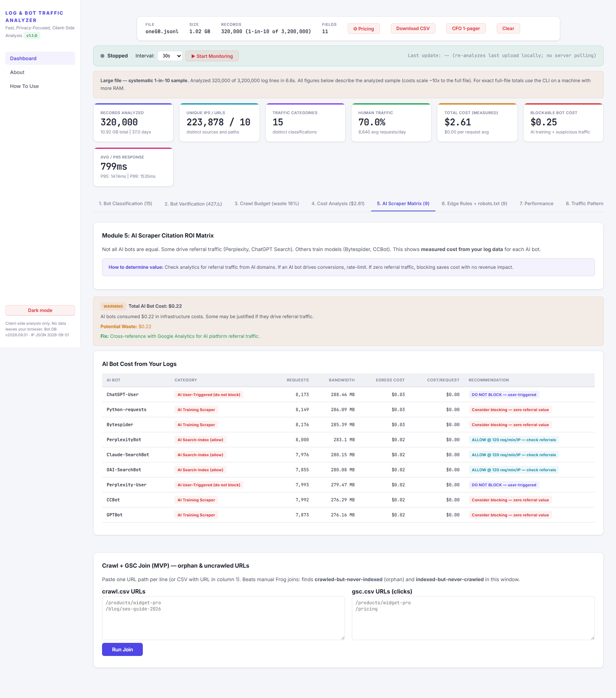

Analyzer / Bots / GPTBot vs OAI-SearchBot
GPTBot vs OAI-SearchBot: same vendor, opposite rules
GPTBot trains models — block it freely with zero live citation loss. OAI-SearchBot powers ChatGPT Search citations (crawl-to-referral ~85:1) — block it and citation share drops in 1–2 weeks. They share a vendor and nothing else: different user-agents, different IP lists, different robots directives, opposite edge policies. The analyzer splits them automatically across 127 signatures and prices each side separately.
1. Tell them apart in your logs
| Signal | GPTBot (training) | OAI-SearchBot (search-index) |
|---|---|---|
| User-Agent | GPTBot/1.x (+https://openai.com/gptbot) + path-form openai/gptbot variant | OAI-SearchBot/1.x (+https://openai.com/searchbot) |
| Purpose | Bulk crawl for model training. Zero direct traffic return. | Live fetch grounding ChatGPT Search answers. Citation-bearing. |
| Crawl-to-referral | Effectively infinite (no referrals measured) | ~85:1 (directional median, confirm on your analytics) |
| IP verification | openai.com/gptbot.json (snapshotted in data/bot-ips.json) | openai.com/searchbot.json (separate list — do not mix them) |
| Edge policy | Block / challenge freely, 60/min (20 aggressive) | ALLOW, 120/min, 429 + Retry-After only — never hard block |
| robots.txt | Disallow: / | Allow: / |
In the 10k pinned fixture (seed 42, EXPECTED.md) GPTBot made 351 requests / 12.5 MB and OAI-SearchBot 234 requests / 8.1 MB — GPTBot is the heavier, more blockable side on most sites, and the analyzer's 1GB run confirmed the pattern at scale (training dominates blockable cost).
2. The rule that gets it right
robots.txt — training blocked, search allowed (RFC 9309)
User-agent: GPTBot
Disallow: /
User-agent: OAI-SearchBot
Allow: /Cloudflare WAF — challenge training only
# Rule 1 — GPTBot: Managed Challenge, 60/min (20/min aggressive)
(http.user_agent contains "GPTBot")
# Rule 2 — OAI-SearchBot: ALLOW, rate-limit 120/min/IP
# excess => 429 + Retry-After: 30 — NEVER BlockThe analyzer generates these exact rules from your log mix (Tab 6 · Edge + Policy Bundle) with copy buttons for Cloudflare, Fastly, and AWS WAF — plus the Sept-15-2026 Cloudflare AI Crawl Control mapping and a consistency check that flags robots-vs-edge conflicts.
3. Proof from a real log
On a 1.02 GB / 3.2M-line run the tool streamed a systematic 1-in-10 sample (320,000 lines in 6.6 s), measured $2.61 total with $0.25 blockable (training only). Search-index and user-fetch are never counted as blockable — asserted in tests. Run the 1-click 10k demo and check Tab 5 · AI Matrix (red = training, cyan = search-index, blue = user-triggered).

4. Verify before you block (spoof hunting built in)
- VERIFIED = source IP matches the vendor JSON (full CIDRs + IPv6, dated 2026-09-17). Only this earns the badge.
- UNVERIFIED GPTBot is the tool's top spoof KPI — a Chrome UA claiming GPTBot from a residential IP is scored as spoofed, not trusted.
- Prefix-only matches are labeled heuristic (low confidence); single-octet /8s were removed from verification entirely.
- One-click batch verify: Tab 2 exports
dig -x+ DoH bundles for the top-20 unverified IPs, plus an rDNS checklist. Confirm server-side before enforcing.
5. Edge cases (2026)
- OAI-AdsBot: allow-listed — it verifies ChatGPT shopping checkouts. Blocking it breaks revenue checks on ecommerce (the analyzer never blocks it, even if mis-tiered — tested).
- ChatGPT-User: user-triggered, ignores robots ~54% — do NOT throttle (300/min abuse ceiling only). A 429 here means a missing live answer, not saved bandwidth.
- GPTBot path-form variant (
openai/gptbot) is classified training too — longest-pattern-first matching prevents shadowing. - Web Bot Auth: if your Cloudflare logs carry
cf-web-bot-auth, the analyzer surfaces it as a strong positive alongside the IP JSON.
FAQ
Will blocking GPTBot hurt my ChatGPT citations? No. Training crawls don't produce citations; search-index does. The 1–2 week citation decay applies to OAI-SearchBot blocks, not GPTBot blocks.
Why 85:1 — is that guaranteed? No. It's a directional median from 2026 studies plus log measurement — ranges, not promises. Confirm against your own analytics before quoting savings.
What about Pay Per Crawl? Tab 6 generates per-path 402 pricing (free / premium / API tiers) with a tollbit-style worker — charge training bots per request instead of blocking, but never price search-index or user-fetch paths.
References
- Vendor IP lists: openai.com/gptbot.json · openai.com/searchbot.json — snapshotted with full CIDRs + IPv6 in
data/bot-ips.json(2026-09-17). - Measured baselines: 1.02 GB teardown ($2.61 / $0.25) · 1GB Logpush guide ·
sample-data/EXPECTED.mdin the repo. - Method: METHOD.md (no-XHR audit) · BOTS.md (tier policy).